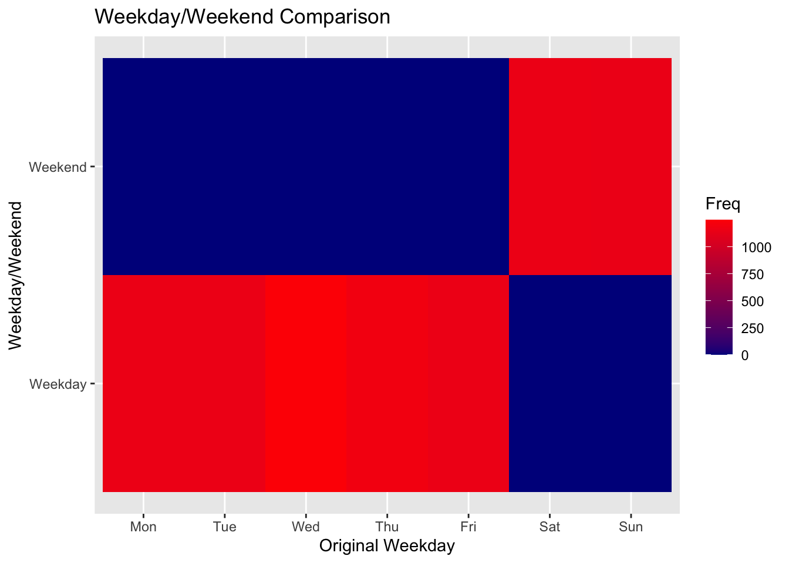
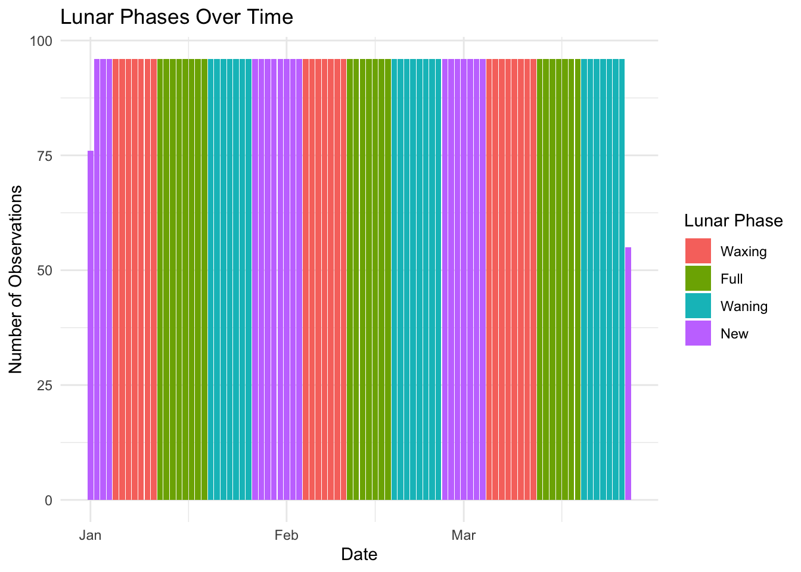
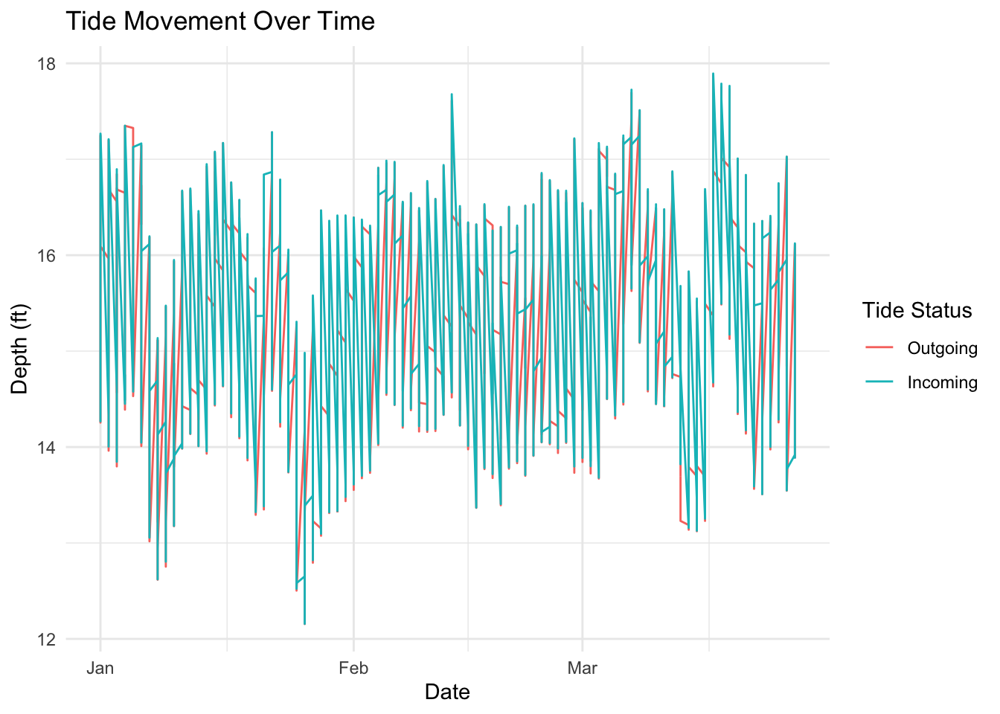
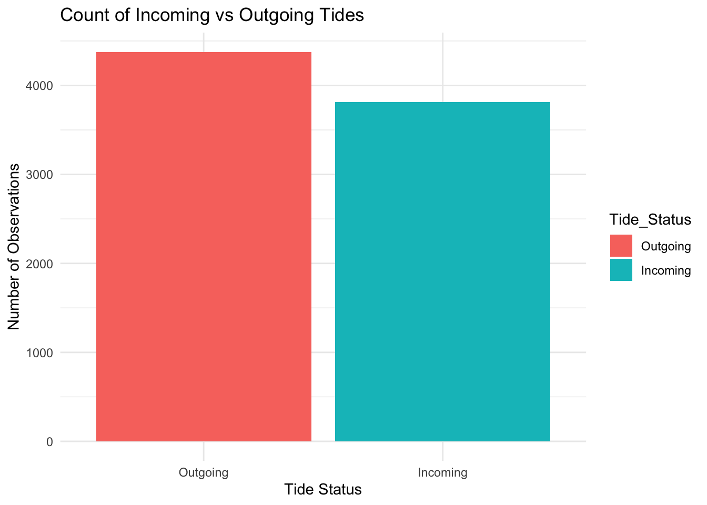

# Convert contingency table to a data frame for plottingcontingency_df <-as.data.frame(contingency_table)# Create a heatmap using ggplot2ggplot(data = contingency_df, aes(x = Var1, y = Var2, fill = Freq)) +geom_tile() +scale_fill_gradient(low ="darkblue", high ="red") +labs(title ="Weekday/Weekend Comparison", x ="Original Weekday", y ="Weekday/Weekend")

Create a column based on the *four primary lunar phases* for the data collected.
rice_cleaned <- rice_cleaned %>%mutate(LunarPhase =lunar.phase(as.Date(DateTime), name =TRUE),LunarPhase =fct_infreq(LunarPhase))ggplot(rice_cleaned, aes(x =as.Date(DateTime), fill = LunarPhase)) +geom_bar(stat ="count") +labs(title ="Lunar Phases Over Time",x ="Date",y ="Number of Observations",fill ="Lunar Phase") +theme_minimal()

[Superstar Question] Create a column that indicates whether the tide is coming in (Incoming) or going out (Outgoing).
# A tibble: 2 × 2
Tide_Status n
<fct> <int>
1 Outgoing 4376
2 Incoming 3811
# Plot the tide movement over timeggplot(rice_cleaned, aes(x =as.Date(DateTime), y = Depth_ft, color = Tide_Status)) +geom_line() +labs(title ="Tide Movement Over Time",x ="Date",y ="Depth (ft)",color ="Tide Status") +theme_minimal()

# Plot a bar chart of the tide summary using forcatsggplot(tide_summary, aes(x = Tide_Status, y = n, fill = Tide_Status)) +geom_bar(stat ="identity") +labs(title ="Count of Incoming vs Outgoing Tides",x ="Tide Status",y ="Number of Observations") +theme_minimal()

Upload a markdown document summarizing these changes in the Rice Rivers Center data set using tables or graphs or some other manner that demonstrates you made the changes.